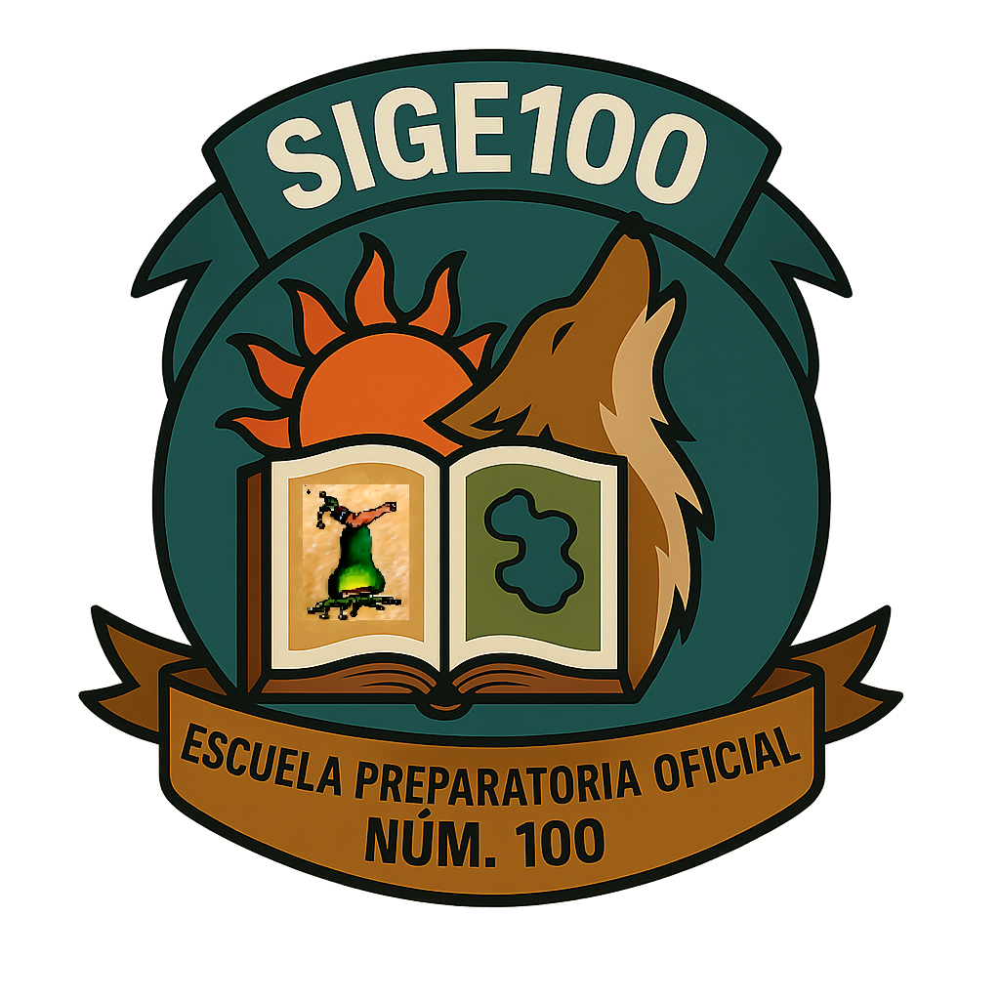
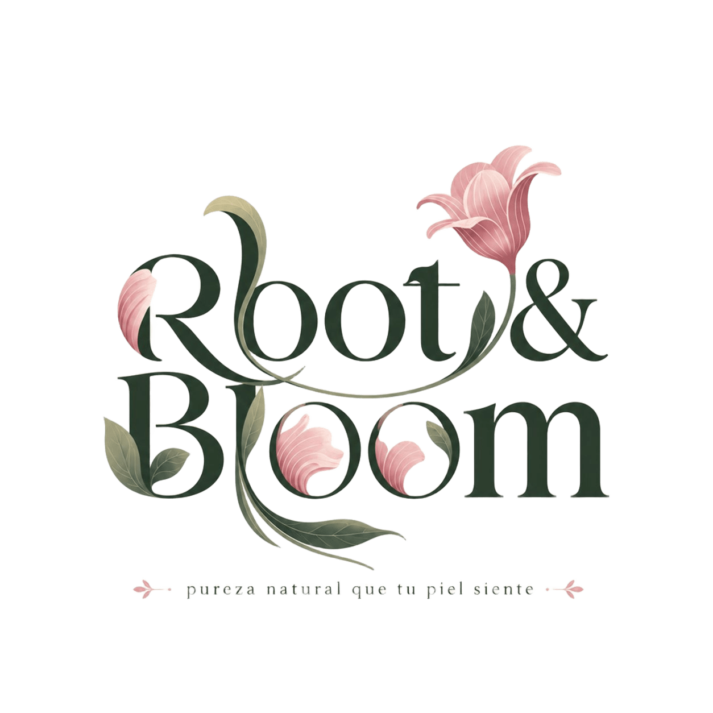
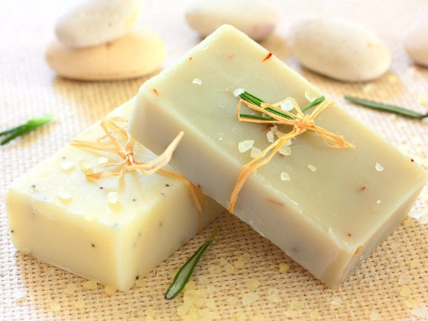

EPO 100

Jabones Artesanales
EPO 100 1ero 04 - Proyecto Escolar

Producto elaborado por estudiantes con ingredientes naturales seleccionados cuidadosamente.
Ayuda a mantener la piel hidratada, limpia suavemente y es ideal para uso diario.
Elaborado por alumnos de la EPO 100 Primero 4, derritiendo glicerina base y agregando ingredientes naturales seleccionados cuidadosamente.
Somos estudiantes de la EPO 100 Primero 4, desarrollando un proyecto escolar de emprendimiento y productos artesanales.
Crear jabones artesanales naturales de calidad que beneficien la piel y fomenten el emprendimiento escolar.
Ser un proyecto reconocido por su calidad, creatividad e innovación en productos artesanales.
📱 WhatsApp o dudas: 5541030845